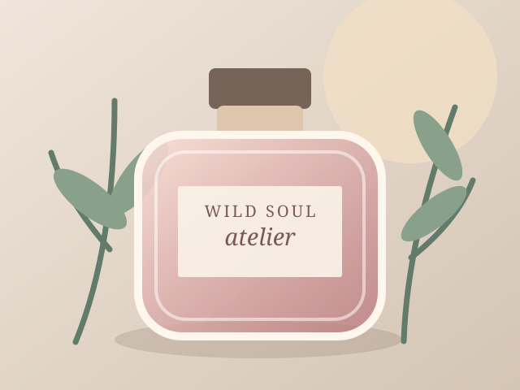

Jewelry & Adornment
Wearable pieces, handmade objects, collections, and tactile experimentation.
CREATIVE MAKER · PERFUME ARTIST · FRONT-END DEVELOPER
I make things. Sometimes they're wearable, sometimes they're fragrant, sometimes they're fictional worlds, and sometimes they're websites.
WHAT I DO
Wearable pieces, handmade objects, collections, and tactile experimentation.
Accords, fragrance concepts, blending, and small-batch creative direction.
HTML, CSS, JavaScript, responsive design, and learning by building.
CSS FILTERS / VISUAL STUDY
A small experiment in how color treatment changes the mood of a fragrance image. Each card uses the same original SVG with a different CSS filter.

EMBED / STUDIO POSTCARD
This responsive postcard lives in its own HTML document and is embedded here with an accessible iframe. It brings together scent, adornment, and code.
Open the postcard on its own ↗HTML TABLE / CREATIVE TOOLKIT
Different materials, one practice of learning through making.
| Medium | Tools and materials | What I create |
|---|---|---|
| Fragrance | Notes, blotters, formulation records | Small batch scent concepts |
| Adornment | Beads, findings, color palettes | Wearable stories and gifts |
| Front end | HTML, CSS, JavaScript | Responsive web experiences |
| Storytelling | Characters, settings, research | Fictional worlds and play |
KEEP IN TOUCH
Explore the source or say hello about a collaboration.